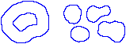

10 Selections
Selections (regions of interest, ROIs[?]), are typically created using the Toolbar↓ Tools↓. Although ImageJ can display simultaneously several ROIs (see Overlays↓ and ROI Manager↓) only one selection can be active at a time. Selections can be measured (), drawn (), filled () or filtered ( submenu), in the case of area selections. In addition it is also possible to hold multiple ROIs as non-destructive Overlays↓.
Selections can be initially outlined in one of the nine ImageJ default colors (Red, Green, Blue, Magenta, Cyan, Yellow, Orange, Black and White). Once created, selections can be contoured or painted with any other color using . Selection Color can be changed in , by double clicking on the Point Tool↓, or using hot keys (see Using a Keyboard Shortcut to Change Selection Color↓). It is highlighted in the center of the Point Tool↓ and Multi-point Tool↓.

Figure 5 Three types of area selections In ImageJ. Notice the cursor changes: to an arrow when it is within the selection, to a cross-hair when outside the selection, to a hand when over a selection vertex or ‘handler’. Notice also the filled handler in the polygon selection and the absence of point handlers in Composite Selections↓. Overlays↓, i.e., non-active selections displayed in the non-destructive image overlay, are also displayed without handlers.
10.1 Manipulating ROIs
Most of commands that can be useful in defining or drawing selections are available in the submenu and summarized in ROI manipulations↓. Listed below are the most frequent manipulations involving selections:
Adjusting Area selections can be adjusted with the Brush Selection Tool↓. In addition, vertexes of selections created with the Polygon Selection Tool↓ and Segmented Line Selection Tool↓ can be adjusted by Alt/Shift-clicking.
Deleting Choose any of the selection tools and click outside the selection, or use . Use to restore a selection back after having deleted it. With Overlays↓, an activated ROI can be deleted by pressing the Backspace (Delete on Mac) key.
Managing A selection can be transferred from one image window to another by activating the destination window and runnig . Alternatively, to create ROIs across multiple images. Multiple selections can be stored as Overlays↓ or in the ROI Manager↓ list ().
Moving Selections can be moved by clicking and dragging as long as the cursor is within the selection and has changed to an  . The status bar displays the coordinates of the upper left corner of the selection (or the bounding rectangle for non-rectangular selections) as it is being moved. To move the contents of a selection, rather than the selection itself, , , and then click within the selection and drag.
. The status bar displays the coordinates of the upper left corner of the selection (or the bounding rectangle for non-rectangular selections) as it is being moved. To move the contents of a selection, rather than the selection itself, , , and then click within the selection and drag.
Nudging Selections can be ‘nudged’ one pixel at a time in any direction using the arrow keys. Note that the up and down keys zoom the image in and out in the absence of selections (see Arrow Keys↓ shortcuts).
Resizing The Brush Selection Tool↓ can be used to perform fine adjustments of ROI contours. Most ROIs can be resized one pixel at a time by holding Alt while using the arrow keys. In general (see Area Selection Tools↓ and Line Selection Tools↓ for details), selections are resized by dragging one of the selection handlers. While dragging, holding Ctrl resizes the selection around its center, holding Alt imposes a fixed aspect ratio and holding Shift forces a 1:1 aspect ratio.
10.2 Composite Selections

The following modifier keys can be use to create composite selections:
Shift Drawing outside current selection while pressing Shift creates new content. To add a non-square rectangle or ellipse, the Shift key must be released after adding the selection
Alt Drawing inside current selection while pressing Alt creates a hole removing content from the ROI
Note that some operations may not be performed properly on complex ROIs. In these cases, it may be useful to convert a composite ROI into a polygon using the command as explained in 14: Converting Composite Selections↓.
Wand Tool↓, ROI2PolylineROI macro
10.3 Selections With Sub-pixel Coordinates
Since ImageJ 1.46, selections can be defined with subpixel accuracy, beyond the nominal pixel resolution of the image: Floating point selections↓. Line Selections (see Line Selection Tools↓) are created with floating-point coordinates if the Sub-pixel resolution checkbox is active in Sub-pixel coordinates of pre-existing selections can be interpolated using the command. Interpolated points are easily noticeable on small selections created on images zoomed 1200% or greater.

Figure 7 Interpolated selections. ROIs drawn with (left) or without (middle) sub-pixel accuracy. For line selections (see Line Selection Tools↓), this option can be enabled in by activating the Sub-pixel resolution checkbox. Pixel coordinates of area selections (see Area Selection Tools↓), can be interpolated using . The image on the right is the output of SubPixelSelections.js, a script that demonstrates how to create selections at sub-pixel resolution without the need of setting any option in ImageJ.